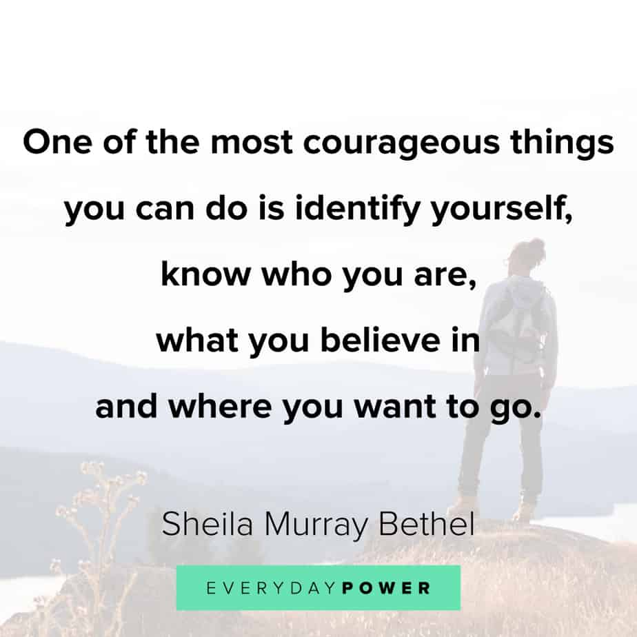

Home
About
Contact
About Me
I'm a very hard working young woman,
very determined and ambitious.
I believe im a go getter with a positive mindset.
My Experience
I worked at pick n pay for 2 years and that gave me alot of experience in retail.
it also gave me the chance to work with a great team sharing ideas and working very close with people.
I also worked for Clicks group ltd, my experience in the retail has groomed me into being ready for the work space i wanted to be in.
My Accomplisments
Certificate of attendence for the WOW programme
Certificate of attendence at NASPERS Labs
My Skills
Communicatin skills
- written, listening and being focused.
Teamwork
- I am a teamplayer i have the ability to delegate to others and take responsibility.
perseverence and motivation
- i have the getup and go attitude i always find a way through.
Education
1 / 2
class of 2014
2 / 2
class of 2014
❮
❯
I went to Hindle High School in Delft where I obtained my matric in 2014
Professional goals and Objectives
I want to expand my professional knowledge and training, i want to enrol in various courses related to my current programme
attend workshops and getting new certificates of achievements.
I also want to improve my work perfomance, i'll start by taking panctuality very seriously also have have a positive attitude towards my job and have a positive mindset
Strengthening a professional relatinship is very important, try to build a healthy relationship in the workplace.
in a work environment you meet different people some you very fnd of some you not but you still need to learn how to set your personal differences aside.

.jfif)